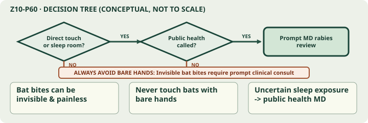

Z10-P60 · Wilderness medicine · New manuscript
Treat indoor bat encounters as potential rabies exposures requiring public-health review
Recognize that bat teeth can leave invisible painless bites during sleep and trigger timely public-health rabies assessment.
When it applies · Finding a bat inside a cabin, tent, or bedroom with a sleeping person, young child, intoxicated person, or anyone unable to confirm zero contact.
Equipment · Local public-health/clinic phone contact and thick leather gloves ONLY if safe containment is directed by health authorities.

Actions
- Understand that rabies is nearly always fatal once symptoms begin, yet completely preventable with timely clinical post-exposure treatment—and tiny bat bites often leave NO visible mark or wake a sleeping person.[M12]
- If a bat is found in a room with a sleeping person, unattended child, or anyone who cannot reliably rule out contact—or if any direct skin contact occurs—wash any contact site with soap and water and contact your local health department or doctor promptly.[M12]
- Never handle a bat with bare hands; if public health advises safe capture for testing, avoid crushing the head and do not risk being bitten—if the bat flies away or cannot be tested, clinical rabies risk assessment still applies immediately.[M12, T01]
Failure recognition · Shooing a bat out of a cabin bedroom where children were sleeping and assuming "nobody saw a bite, so no doctor is needed."[M12]
Verify · Confirm zero bare-hand contact occurred and medical/public-health consultation is initiated promptly for any uncertain sleeping-room exposure.[M12]
Stop or change course · Any confirmed bat bite/scratch or uncertain exposure during sleep requires prompt clinical consultation—never wait for symptoms.[M12]
Evidence and editorial notes
- M12 · NIH / MedlinePlus · Animal Bites (current web edition)
- Section: Animal Bites, Rabies Exposure, and Wound Infection · Conditions: Wild or domestic mammal bites or scratches breaking skin
Support: Wash bite wounds promptly with soap and clean running water, control bleeding, and obtain prompt medical evaluation for infection risk, tetanus status, and rabies post-exposure assessment.
Limitations: Bat encounters in sleeping areas can cause unrecognized bites requiring public-health rabies consultation. · Conflicting evidence: None; aligns with CDC rabies guidance.
Editorial note: Anchors mammal-bite hygiene and public-health rabies referral. · Specialist reviewer: Infectious disease and emergency medicine
Primary source · checked 2026-11-24 - T01 · American Red Cross · First Aid Steps (current web edition)
- Section: First Aid Steps > Check the scene; check the person · Conditions: Lay responder in United States; assess safety before contact
Support: Check scene safety, responsiveness, breathing and immediately life-threatening conditions.
Limitations: Lay guidance does not replace advanced clinical or rescue protocols. · Conflicting evidence: None; universal first-response opening gate.
Editorial note: Anchors scene-safety-first rule across Z01. · Specialist reviewer: EMS and wilderness medicine
Primary source · checked 2026-11-24
Source lineage · NIH MedlinePlus Animal Bites; new manuscript · Classification · New manuscript.